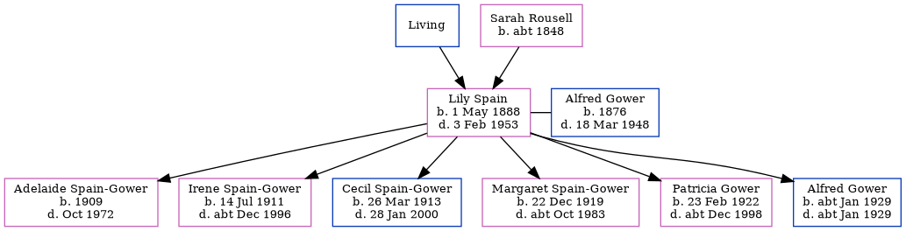

Lily Gower (née Spain) 1888 - 1953 [ Home ] | [ Calendar ] | [ Surnames Index ] | [ Family History ]The youngest of 3 children of Charles Spain (a builder's joiner) and Sarah Rousell (a lodging house keeper)Lily Spain , the second cousin twice-removed on the father's side of Nigel Horne , was born in Margate, Kent, England on May 1, 1888 and married Alfred Gower (a painter's laborer railroad co with whom she had 6 children: Adelaide Sylvia , Irene Violet , Cecil , Margaret Mary , Patricia Winifred Jean and Alfred Joseph ) in Wandsworth, London, England around Aug 19081 .
Throughout her life, Lily lived in several places: on Dane Road in Margate on Apr 5, 18913 ; on Edgar Road in Margate on Mar 31, 19012 ; and on St James Road, Camberwell, London on Apr 2, 19114 .
She died on Feb 3, 1953 at 28 Princess Ann Avenue, Broadstairs, Kent, England.
Parents Charles Sarah Ann was born c. 1848Children Adelaide Sylvia was born in 1909Irene Violet was born on Jul 14, 1911Cecil was born on Mar 26, 1913Margaret Mary was born on Dec 22, 1919Patricia Winifred Jean was born on Feb 23, 1922Alfred Joseph was born c. Jan 1929Citations England & Wales Marriages 1837-2005 - Findmypast 1901 England, Wales & Scotland Census - Findmypast (was age 13 and the daughter of the head of the household) 1891 England, Wales & Scotland Census - Findmypast (was age 3 and the daughter of the head of the household) 1911 Census for England & Wales - Findmypast (was age 23 and the wife of the head of the household) Media 1891 England, Wales & Scotland Census - GBC/1891/0005869844 1901 England, Wales & Scotland Census - GBC/1901/0007751528 England & Wales marriages 1837-2005 - BMD/M/1908/3/AZ/000368/338 Family Tree Map
Generated by Ged2Site . Last updated on Apr 1, 2025